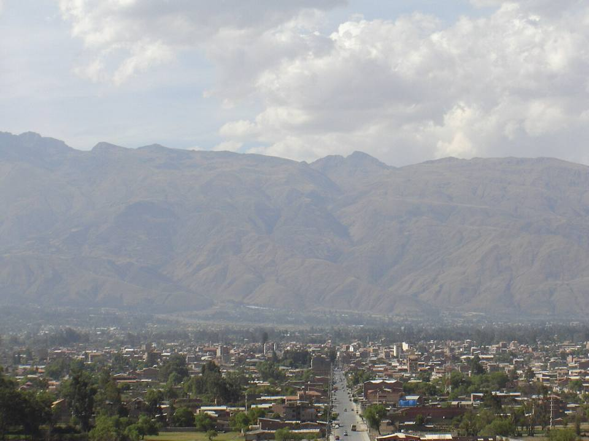
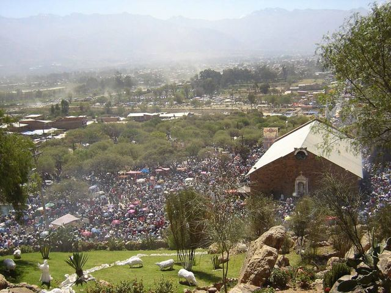
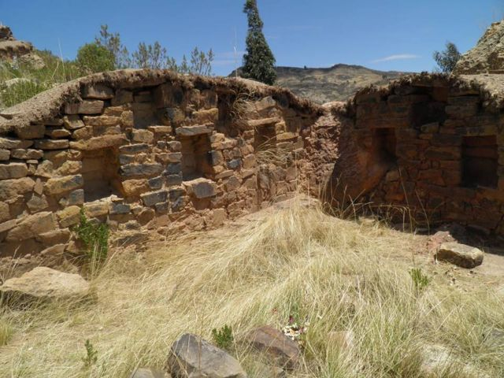
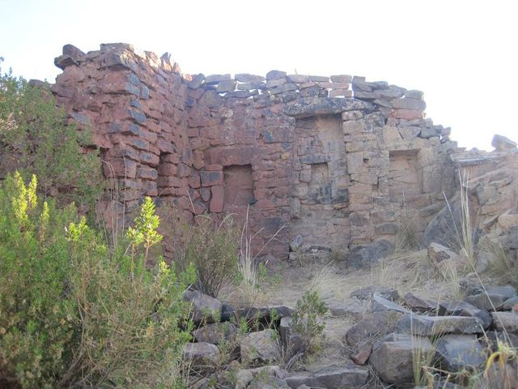
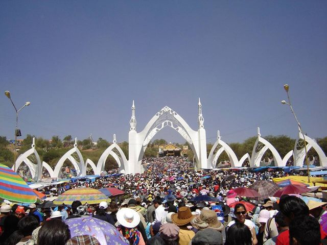
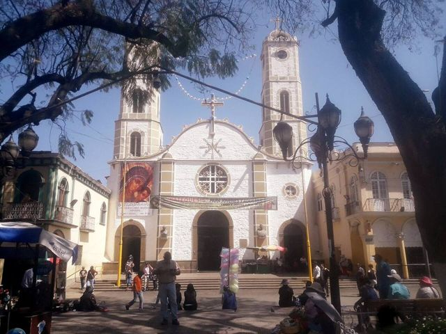
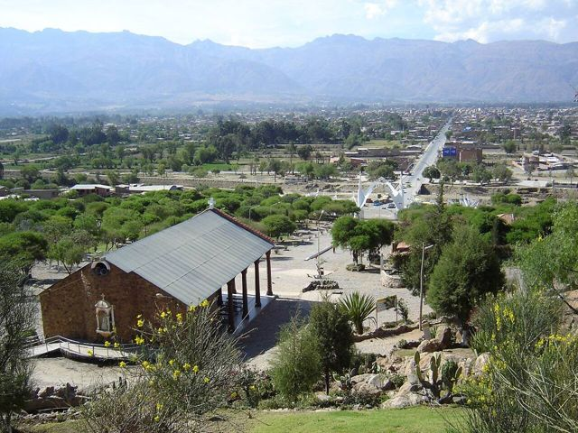

Quillacollo and Inca Rakay
Cochabamba Department · Culture and history

The Inca Rakay ruins look down over the valley from a rocky spur. You walk up from Sipe Sipe and the view more than repays the effort. On the way back, Quillacollo is the town of the Virgen de Urkupiña, whose August festival draws hundreds of thousands of pilgrims and dancers.
2,900 maltitude
1 dayto spend there
Things to do
- Walk up to the Inca Rakay ruins (2 hours)
- Quillacollo and the Virgen de Urkupiña sanctuary (big festival in mid-August)
- Pools and chicherías in Sipe Sipe
What to eat
- ChichaFermented corn beer, slightly sour, served in gourds (tutumas). Look for chicherías marked with a white flag.
- ChicharrónPork cooked slowly in its own fat until golden, served with mote (big corn kernels) and chuño. A Sunday dish.
- SilpanchoA thin breaded beef cutlet on rice and potatoes, topped with a fried egg and a tomato and onion salad. THE Cochabamba dish.
Tip. Half-day or day trip from Cochabamba.
Also here
- Festivals Virgin of UrkupiñaHundreds of thousands of pilgrims and dancers in Quillacollo. On the last day, people climb to the calvary to break off stones, a symbol of prosperity.
How to get to Inca Rakay
Cochabamba Road (bus, car) · 1 h + 2 h walk
Trufi to Quillacollo then Sipe Sipe, then walk up.
Photos of Quillacollo and Inca Rakay












More places in this region
 CochabambaThe “city of eternal spring” and the food capital of the country.
CochabambaThe “city of eternal spring” and the food capital of the country. Laguna AlalayA large lagoon in the heart of Cochabamba, a bird refuge below the hills.
Laguna AlalayA large lagoon in the heart of Cochabamba, a bird refuge below the hills. Pairumani and Villa AlbinaThe villa of tin baron Simón Patiño, its gardens, and the start of a trail to the Tunari.
Pairumani and Villa AlbinaThe villa of tin baron Simón Patiño, its gardens, and the start of a trail to the Tunari. Tunari National ParkThe mountains right above the city: high lagoons and the Tunari summit (5,035 m).
Tunari National ParkThe mountains right above the city: high lagoons and the Tunari summit (5,035 m).- Apote and its twin waterfallsA mountain valley above Tiquipaya, with two waterfalls side by side and trails towards the Tunari.
 YungapampaA refuge above a sea of clouds, on the north side of the Tunari, Andean bear country.
YungapampaA refuge above a sea of clouds, on the north side of the Tunari, Andean bear country. Laguna CoraniA large reservoir among pine forests and mountains, known for its trout.
Laguna CoraniA large reservoir among pine forests and mountains, known for its trout. IncachacaA cloud forest at the edge of the Chapare, with an Inca bridge, waterfalls and an old power plant.
IncachacaA cloud forest at the edge of the Chapare, with an Inca bridge, waterfalls and an old power plant. Valle Alto: Tarata and ClizaColonial valley villages, markets and chicha.
Valle Alto: Tarata and ClizaColonial valley villages, markets and chicha. Torotoro National ParkDinosaur footprints, a spectacular canyon and the Umajalanta cave.
Torotoro National ParkDinosaur footprints, a spectacular canyon and the Umajalanta cave. IncallajtaThe largest Inca site in Bolivia, in a remote valley.
IncallajtaThe largest Inca site in Bolivia, in a remote valley. TotoraA small, well-preserved colonial village on the old road to Santa Cruz.
TotoraA small, well-preserved colonial village on the old road to Santa Cruz. AiquileBolivia's national charango capital, halfway between Cochabamba and Sucre.
AiquileBolivia's national charango capital, halfway between Cochabamba and Sucre. MizqueA colonial village in a warm valley, home of the red-fronted macaw.
MizqueA colonial village in a warm valley, home of the red-fronted macaw.